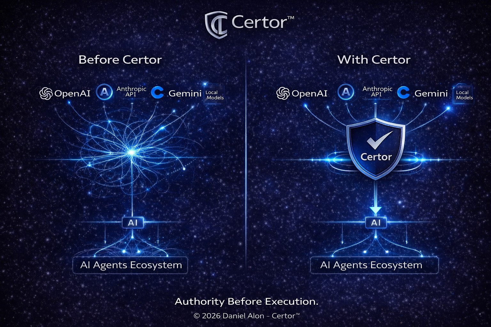

Rethinking Responsibility in the Age of Artificial Intelligence

Artificial intelligence systems increasingly shape real-world outcomes. From risk assessment to recommendation engines that influence human behavior, AI has moved beyond a passive analytical role. It participates. It affects. It acts.
Public discourse often centers on performance, bias, transparency, and explainability. While essential, these concerns orbit a deeper structural question: authority.
Not merely how intelligent systems decide, but under whose authority they execute.
In human systems, a fundamental distinction exists between decision formation and execution. Authority bridges that separation.
A recommendation may be evaluated, revised, or rejected. Execution alters reality.
Contemporary AI systems frequently collapse these layers. Algorithmic outputs are increasingly treated as executable by default, with review mechanisms activated only after consequences emerge.
Oversight in such models documents events retrospectively. It does not determine whether execution should occur in the first place.
The prevailing assumption in many digital systems is that capability implies permission. If a system can decide, it may act.
Authority Before Execution proposes a structural separation: decision logic and execution authority should not reside within the same operational layer.
Execution becomes conditional rather than automatic.
This framework introduces a layered separation between:
The authority layer precedes execution and operates independently from the system generating the decision. Its function is not to explain decisions, but to authorize, defer, modify, or block execution.
This separation repositions responsibility from retrospective accountability to pre-execution governance.
As AI systems gain influence and operational autonomy, the absence of authority may represent a greater systemic risk than the absence of transparency.
Not every decision should be executed simply because it can.
The unresolved question is not whether AI can decide, but who — or what — must authorize its actions before they occur.
A separate architectural overview of the Certor™ framework is available.
View the Architecture Overview